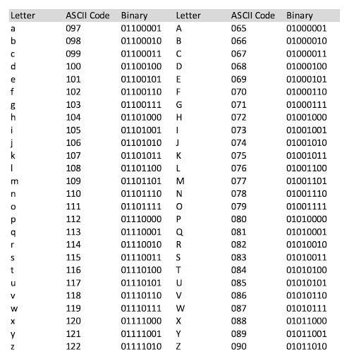

Binair Stelsel
Welkom op deze pagina met uitleg over de werking van het binaire stelsel.
Het binair stelsel gebruikt alleen de cijfers 0 en 1, in tegenstelling tot het decimale stelsel dat wij dagelijks gebruiken (met de cijfers 0–9). De kleinste eenheid van informatie in een computer is een bit (binary digit). Acht bits samen vormen een byte, wat een belangrijk stukje informatie kan voorstellen. Elke combinatie van bits kan een andere betekenis hebben, bijvoorbeeld tekens of cijfers. Via het ASCII-systeem (American Standard Code for Information Exchange) worden karakters zoals letters en symbolen omgezet naar binaire code. De letter "A" is bijvoorbeeld 01000001.

Probeer het zelf!
Voer een decimaal getal in (0–255) of klik op de bits om te schakelen. De ASCII-tekst wordt ook direct getoond.